Theseus and the Maze of Big Choices
A story about courage, friendship, promises, and the choices that shape a hero.
The Boy and the Big Rock

Long ago, in Greece, there was a boy named Theseus.
He lived with his mom, Aethra.
His dad was King Aegeus of Athens. Some old tales say the sea god Poseidon was his dad, too.

One day, his mom took him to a big rock.
“Your dad left a gift for you,” she said.
“It is under this rock.”

Theseus pushed.
He pushed again.
At last, the rock moved!

Under it were a sword and a pair of shoes.
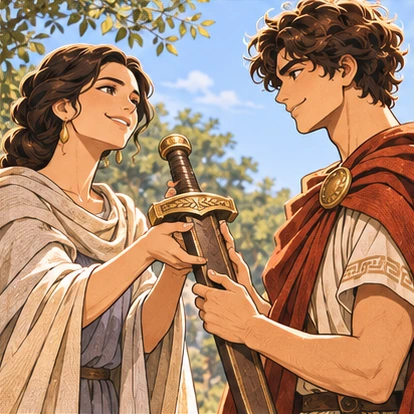
“These were your dad's,” said Mom.
“You are ready to meet him.”
Theseus smiled.
“I will make you proud, Mom!”
The Long Road Home
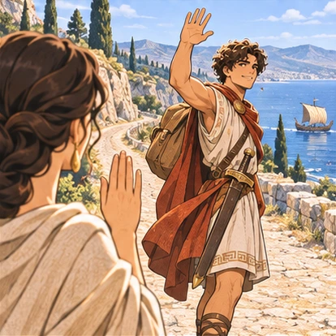
Theseus had to go to Athens.
He could take a boat.
But he took the long road.
The road was not safe.
Bad men hurt people there.

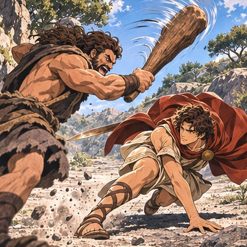
One man, Periphetes, had a big club.
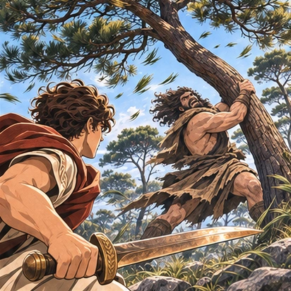
One man, Sinis, used trees to hurt people.
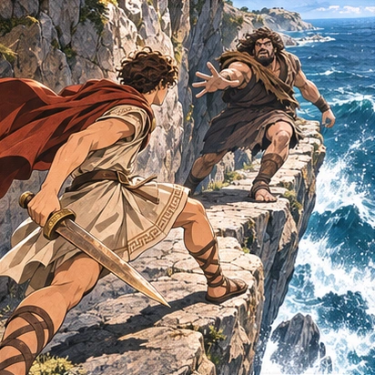
Sciron pushed people off rocks.
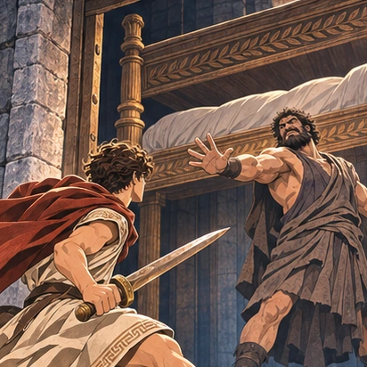
Procrustes made people fit his bed, even if they were too big or too small.
Theseus was scared.
But he did not run away.
He fought the bad men and stopped them.
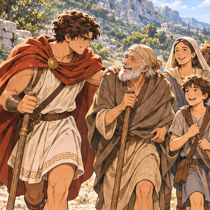
“I will help keep this road safe!” he said.
At last, he came to Athens.
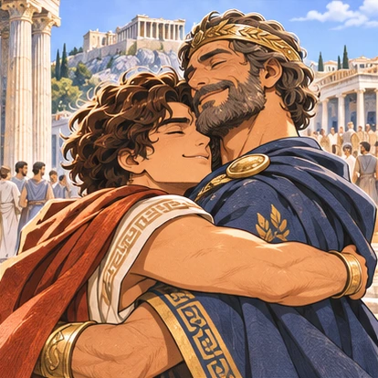
King Aegeus saw the sword and shoes.
“My son!” he cried.
They gave each other a big hug.
Theseus was home.
The Scary Maze
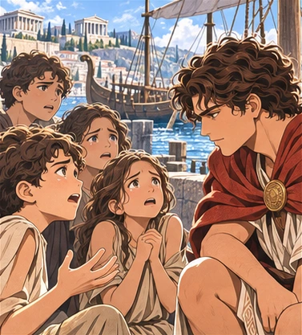
One day, Theseus saw a group of sad kids.
“Why are you sad?” he asked.
“We must go to Crete,” said one boy.
“There is a monster there,” said a girl.
The monster was called the Minotaur.
It had the head of a bull and the body of a man.
It lived in a huge maze.
Each year, young people from Athens were sent there.
They did not come home.

Theseus looked at the kids.
He felt scared, too.
But he had to help.
“I will go with you,” he said.
“I will stop the monster!”
The Girl with the Red Thread

On Crete, Theseus met Princess Ariadne.
She was kind and smart.
She liked Theseus very much.
“I want to help you,” she said.
She gave him a ball of thread.
“Hold on to this,” she said.
“Let the thread fall as you walk.”
“Then you can find your way out!”
Theseus took the thread.
“Thank you, Ariadne!”
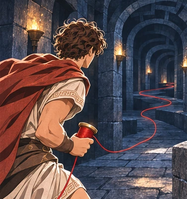
He went into the dark maze.
Step. Step. Step.
The path went left.
Then right.
Then left again.
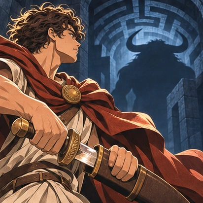
Suddenly—

“ROAR!”
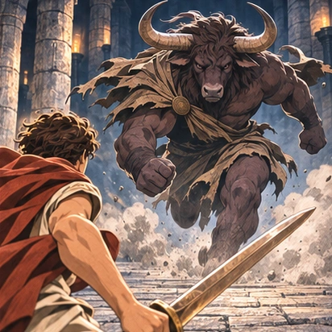
The Minotaur was there!
Theseus took out his sword.
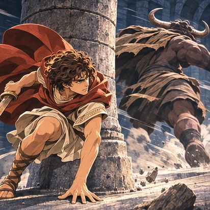
His hands shook.
But he stood tall.
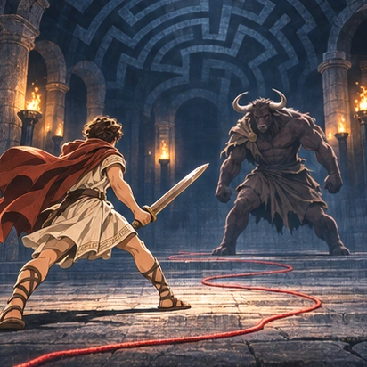
He fought the monster.
At last, the Minotaur fell.
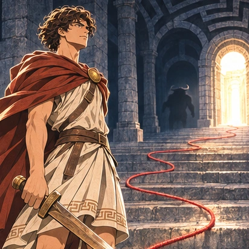
Theseus had won!

He followed the thread back.
He led the kids out of the maze.
“We are free!” they cheered.
Theseus smiled.
He had helped his friends.
And Ariadne had helped him.
A Friend Left Behind

Theseus and Ariadne sailed away.
They came to an island called Naxos.
But something sad took place.
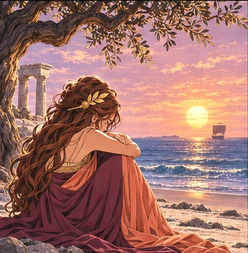
Theseus left Ariadne on the island.
She had helped save his life.
Now she was alone.
Some old tales say the god Dionysus had a part in why they did not stay together.
But one thing was clear.
Ariadne had been a true friend.
Theseus had not been a good friend to her.
A true friend should show care and say thank you.
The Black Sail
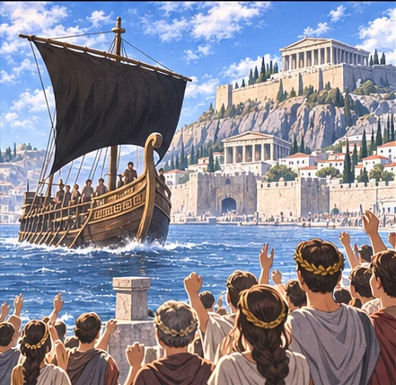
Before Theseus left Athens, his dad had said,
“Put up a white sail if you come home safe.”
“If you do not come back, the ship will have a black sail.”
Theseus had said, “I will, Dad!”
But on the way home, he forgot.
The ship still had its black sail.
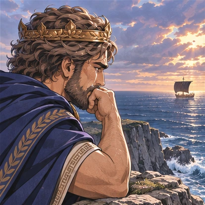
King Aegeus saw it from far away.
“Oh, no!” he cried.
He thought his son was dead.
He was so sad that he jumped into the sea.
He never came back.
The sea was later called the Aegean Sea, after him.
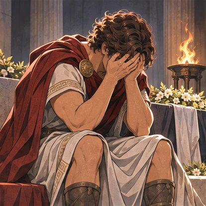
When Theseus got home, he heard the news.
He cried.
“I forgot my promise,” he said.
He had won a big fight.
But he had lost his dad.
A King with a Big Dream

Theseus became the king of Athens.
He had a big dream.
There were many towns near Athens.
The people did not always work together.
“These towns can be one big team,” he said.
He helped bring the towns together.
This was called synoikismos.
It meant joining towns as one.
People came together to work and share.
Athens became a great city.
Theseus was proud.
He had learned that people could do more when they worked as a team.
A Very Bad Plan

Theseus had a friend named Pirithous.
One day, they made a bad plan.
They wanted to take Persephone away.
She was the queen of the land of the dead.
They did not ask if she wanted to go.
That was wrong.
The two friends went down to the land of the dead.
But Hades, the king there, caught them.
They could not get out!
They were stuck.
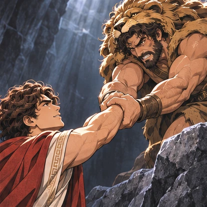
Later, a strong hero named Heracles came.
He saved Theseus.
Theseus was free again.
But his bad choice had put him in great danger.
Being brave did not make a bad plan right.
The Lie That Hurt a Family

Years went by.
Theseus had a son named Hippolytus.
Theseus also had a wife named Phaedra.
Phaedra was Hippolytus's stepmom.
She wanted him to love her in a way he did not.
Hippolytus did not feel the same.
Phaedra became upset.
She told a terrible lie about him.
She said he had hurt her.
Theseus heard the lie.
He was very angry.
He did not stop to hear his son's side.
He asked Poseidon, the sea god, to punish his son.
A terrible event took place.
Hippolytus died.

Later, Theseus learned the truth.
His son had done nothing wrong.
Theseus was heartbroken.
“I should have listened,” he cried.
But it was too late.
His anger had hurt someone he loved.
The Last Days of a Hero

Theseus was now an old man.
Life in Athens had changed.
Many people no longer wanted him as king.
So he left his city.
He went to an island called Skyros.
The king there was named Lycomedes.
One day, Lycomedes took Theseus up a high hill.
Then he pushed Theseus off a cliff.
Theseus died.
It was a sad end for a great hero.
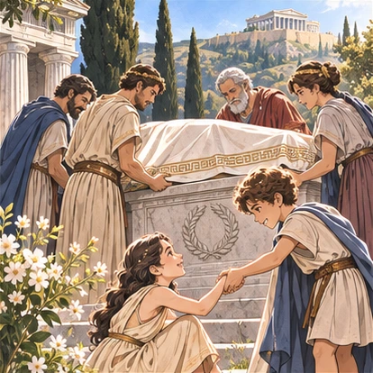
Many, many years later, a man named Cimon went to Skyros.
He found bones that people said were Theseus's.
He took them back to Athens.
The people gave Theseus a place of honor.
They told stories of his brave acts.
They did not forget him.
What Makes a Real Hero?
Theseus had done many brave things.
He had stopped bad men.
He had fought a monster.
He had saved young people.
He had helped towns work as one.
But Theseus had also made big mistakes.
He left a friend behind.
He forgot a promise.
He made a bad plan.
He got angry and did not listen.
His story teaches us something big.
Being strong is not the same as being good.
You do not need a sword to be a hero.
You can be a hero when you help a friend.
You can be a hero when you keep a promise.
You can be a hero when you tell the truth.
You can be a hero when you stop and listen.
And when you make a mistake?
You can say, “I am sorry.”
You can try to make things right.
A real hero is not just brave. A real hero is kind, fair, and true.
And that is a hero you can be, too!
THE END
Coloring Page
Bring Theseus and the Minotaur to life with your own colors. Print this one-page PDF on A4 paper in landscape orientation.
Download Coloring PDF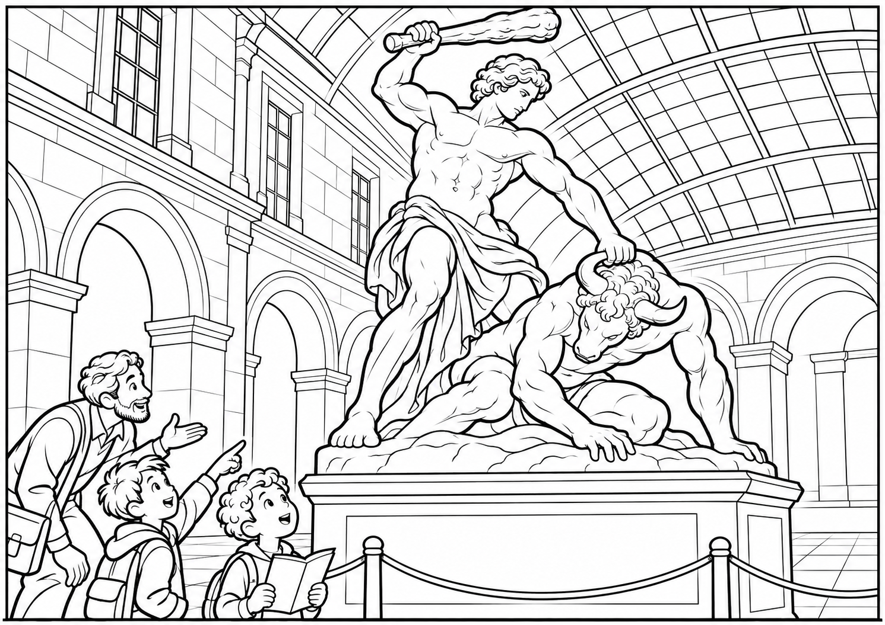